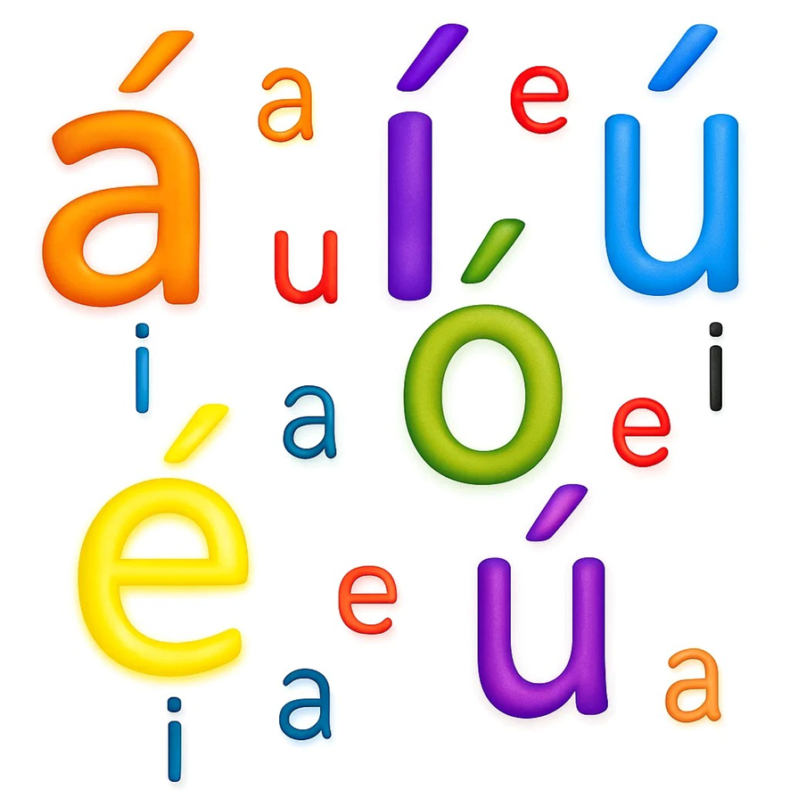
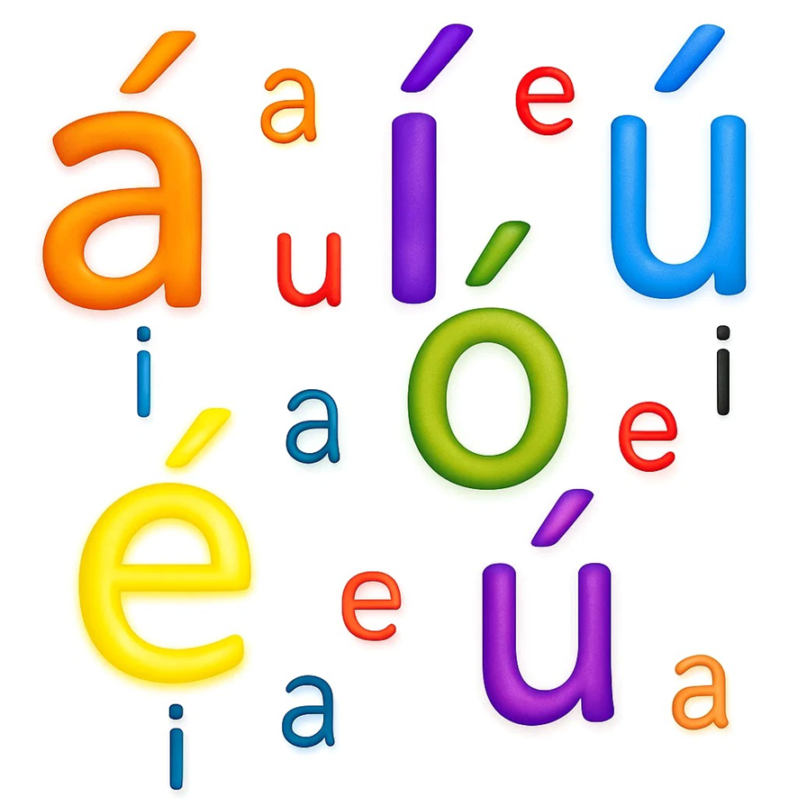

¿QUE ES?
También llamado acento grafico u ortográfico, es la rayita oblicua(´) que se pinta sobre la vocal de la sílaba tónica de algunas palabras para representar gráficamente el acento.
EJEMPLOS:
colibrí, tórax, México, castíguesele

También llamado acento grafico u ortográfico, es la rayita oblicua(´) que se pinta sobre la vocal de la sílaba tónica de algunas palabras para representar gráficamente el acento.
EJEMPLOS:
colibrí, tórax, México, castíguesele

Obra publicada con Licencia Creative Commons Reconocimiento Compartir igual 4.0